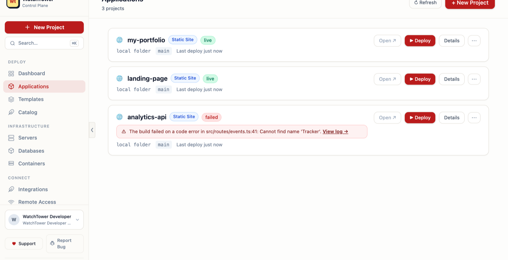
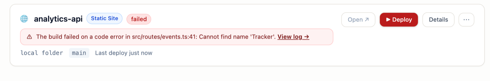

Install on the machine you have
Download the desktop app for Mac, Linux, or Windows — or pip install watchtower-podman. That spare laptop or mini-PC in the drawer? That's your server now.
Open source · Runs on computers you already own
Got a laptop or mini-PC gathering dust? Give it a job. Point WatchTower at your GitHub repo and your website is live — database, backups, and a private URL included, for $0/month. And when a deploy breaks, WatchTower fixes it by itself.
Need a different platform or version?

How it works
No YAML, no reverse-proxy homework, no cloud account. The desktop app sets up everything it needs — including Podman — with guided one-click installs.
Download the desktop app for Mac, Linux, or Windows — or pip install watchtower-podman. That spare laptop or mini-PC in the drawer? That's your server now.
Or start from the app catalog. WatchTower builds your project in a rootless container and wires up a database if you need one — connection string included.
Private over your Tailscale network by default; go public through a Cloudflare tunnel when you're ready. Push to GitHub and it redeploys.
Then it keeps it running
Coolify, Dokploy, Umbrel, and CasaOS all let you self-host. None of them fix a broken deploy for you.

not a mockup — a real failed deploy explaining itself
Port conflicts, registry flakes, out-of-memory, bad env vars — failures are classified, not just logged.
With autonomy on, safe fixes are applied and the deploy retried. A thrash guardrail stops it from fixing recklessly.
Anything it can't safely auto-fix waits in your approval queue with an AI root-cause analysis attached.
Batteries included
One app, one machine, the whole picture — no plugin shopping trip before your first deploy.
Postgres, MySQL, MariaDB, Mongo, Redis — one click, auto-wired connection strings, scheduled backups.
Reach your machine from anywhere over Tailscale. No port-forwarding, no open ports, nothing public until you say so.
Every database backup auto-copies to another machine on your network or a cloud folder — so your data survives a dead disk. Works across Mac, Linux & Windows.
Self-hostable apps and project templates, deployable in a click — plus your own repos.
Rootless Podman containers and pods, start to logs, from the same UI. No root Docker daemon on your machine.
GitHub sign-in, org roles, and an append-only record of who deployed what, when — SOC 2-style evidence built in.
Point it at Ollama, LM Studio, or any OpenAI-compatible endpoint. It can only do what you can do — no privilege escalation.
Why not the others?
WatchTower is younger than Coolify — it wins on self-healing and rootless-on-your-own-PC, not on breadth.
| WatchTower | Coolify | Dokploy | Umbrel / CasaOS | |
|---|---|---|---|---|
| Deploy from GitHub | ✅ | ✅ | ✅ | partial |
| One-click databases | ✅ | ✅ | ✅ | ✅ |
| Self-heals a failed deploy | ✅ | ❌ | ❌ | ❌ |
| Built for your own PC (not a VPS) | ✅ | VPS-first | VPS-first | ✅ |
| Rootless (no root Docker daemon) | ✅ Podman | ❌ | ❌ | ❌ |
| Private by default (Tailscale) | ✅ built-in | add-on | add-on | add-on |
Reflects public feature sets as of mid-2026.
Pricing
Open-core under Apache-2.0 + ELv2. You never pay to deploy your own apps on your own hardware.
Free · forever
Everything you need to run your own stack.
Pro · for teams
Everything unlocked today — paid plans arrive with billing.
Download or pip install watchtower-podman, sign in with GitHub, deploy. Free and open source.
Trying it? Tell us where it fights you — every report shapes the roadmap.